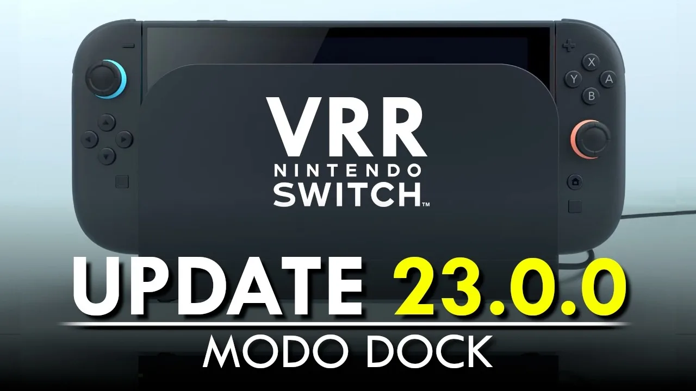

Luiso · 11 de septiembre de 2026 · 2 min de lectura
Nintendo lanzó la actualización 23.0.0 para Nintendo Switch 2, una nueva versión del sistema que incorpora varias funciones esperadas por los usuarios, entre ellas el soporte para VRR en modo TV y la posibilidad de realizar una transferencia completa de datos entre dos consolas Nintendo Switch 2.
El VRR, o frecuencia de actualización variable, permite que un televisor compatible ajuste su tasa de refresco para coincidir con la velocidad a la que el juego está procesando las imágenes. Esto puede proporcionar una experiencia más fluida, especialmente en títulos que presentan variaciones en su tasa de cuadros.
La incorporación resulta especialmente llamativa porque Nintendo había anunciado originalmente que Switch 2 sería compatible con 4K, 120 FPS y VRR en modo TV, aunque posteriormente las referencias al VRR fueron retiradas de los sitios oficiales de la compañía. La consola llegó finalmente al mercado sin esta característica habilitada cuando se utilizaba conectada al dock.
La actualización también permite realizar una transferencia completa de datos entre dos consolas Nintendo Switch 2. De esta manera, los usuarios pueden trasladar información como partidas guardadas y capturas de pantalla a una nueva consola, una función especialmente útil para quienes decidan cambiar de equipo.
Además, la versión 23.0.0 incorpora distintas mejoras para los Mii. Ahora es posible agregar música al editor de Mii, incluyendo temas inspirados en los editores utilizados anteriormente en Wii, Nintendo 3DS y Wii U. También se añadió la posibilidad de generar códigos QR para compartir Mii con otros usuarios.
Por otro lado, se realizaron cambios relacionados con Game Chat, incluyendo nuevas opciones para consultar el historial de conversaciones. La actualización también agrega compatibilidad con portugués de Brasil para la función de texto a voz, tanto en determinadas opciones del sistema como en Game Chat.
Nintendo también introdujo diferentes ajustes de accesibilidad, audio y controles, además de varias correcciones de errores y mejoras generales de estabilidad. Algunas configuraciones de audio pueden guardarse ahora de forma independiente para cada televisor conectado.
Para utilizar el VRR en modo TV, será necesario contar con una base de Nintendo Switch 2 actualizada, además de un televisor y un juego compatibles con esta tecnología.